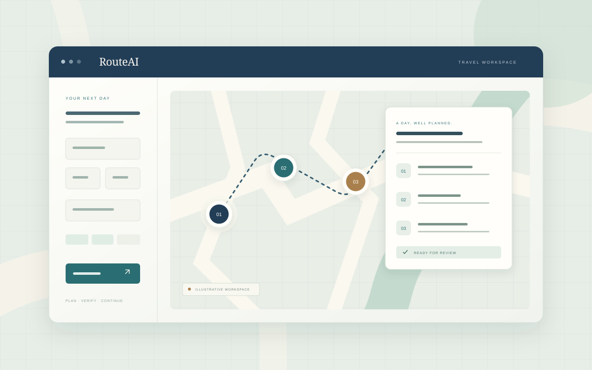

AI Agent / 2026
RouteAI
把旅行规划，做成可继续的过程。
一个可恢复的多 Agent 旅行规划系统。让检索有来源、行程可检查；在需要补充信息或审核时暂停，再从原来的位置继续。
LangGraphTool CallingHuman-in-the-loopFastAPI
阅读项目案例
56自动化测试通过
17 / 17离线评测场景
109场景检查通过
Selected work · 作品集
关注 AI 如何走出一次回答，进入真实的产品流程。这里记录我的设计选择、工程实践，以及能够复现的结果。
01 / 精选项目
AI 应用 · Agent 工程

AI Agent / 2026
把旅行规划，做成可继续的过程。
一个可恢复的多 Agent 旅行规划系统。让检索有来源、行程可检查；在需要补充信息或审核时暂停，再从原来的位置继续。
Behind the work
每件作品都从一个具体问题出发。比起列出技术名词，我更关心它们如何改变使用体验、在什么条件下成立，以及如何用代码与验证说明结果。RouteAI 是这里的第一件作品。